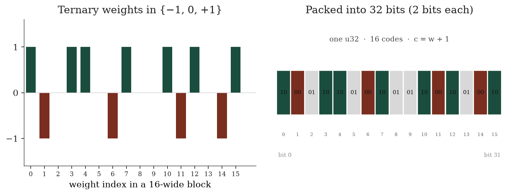
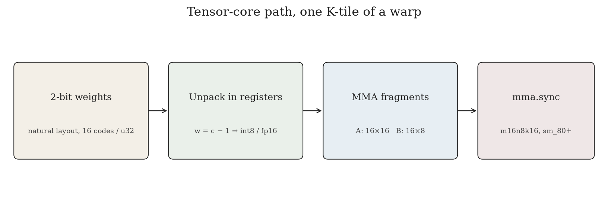
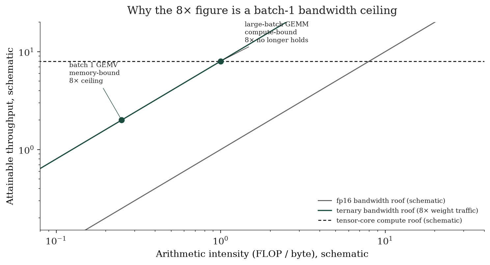
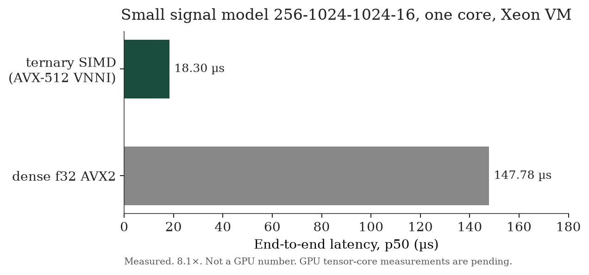

A tensor-core path for ternary GEMM
ternary-gemm is a Rust and CUDA library of fused kernels for models whose weights live in {−1, 0, +1}. This note describes a new backend that unpacks those 2-bit weights into int8 or fp16 fragments and issues NVIDIA mma.sync tensor-core instructions, in the style of TriRun and BitBLAS. The only measured numbers in this report are CPU latencies. The 8× figure versus fp16 at batch 1 is a theoretical bandwidth ceiling, not a GPU result. GPU measurements are pending.
1. Motivation
The cost of inference is increasingly a cost in energy and in latency per token, not a cost in training FLOPs. For a decode step the working set is a sequence of matrix–vector products: each output row of a linear layer reads its weights once, multiplies them by a single activation vector, and writes a single output. When the weights are stored in fp16, that traffic is two bytes per element. When they are ternary and packed in two bits, it is a quarter of a byte — eight times less.
That ratio matters only if the kernel can actually feed the arithmetic units from those packed bits, and only if the problem is memory-bound. The existing kernels in this repository do the first part with dp4a on integer ALUs. Tensor cores are the units that later GPUs provision for dense GEMM, and the natural next step is to unpack the same 2-bit payload into the fragments those units expect. The prize, if the path is bandwidth-bound, is more tokens per joule and fewer microseconds per token. Whether that prize is collected on a given GPU is a measurement, and that measurement has not been made here.
2. Ternary packing
Every weight is an element of {−1, 0, +1}. The library stores it as the code c = w + 1 in {0, 1, 2}, sixteen codes to a 32-bit word. In the natural layout, weight k of a row lives in word ⌊k/16⌋ at bits 2(k mod 16). Figure 1 shows one such 16-wide block and the word it becomes.

A second, permuted layout, used by the dp4a kernels, rearranges those codes so that a shift-and-mask produces four consecutive weights as bytes, ready for __dp4a. Both layouts are stored on the device. The tensor-core path unpacks from the natural layout, which maps directly onto the K dimension of an m16n8k16 tile.
Activation quantization on the W2A8 path is unchanged: BitNet’s per-token absmax scheme, s = 127 / max(|x|, 10−5), with integer accumulation and the epilogue y = (Σ w q) / s · w_scale. Because the tensor-core kernel decodes weights to {−1, 0, +1} before the MMA, it does not need the (c − 1) correction that the dp4a kernels apply through a stored activation sum.
3. The tensor-core path
The new kernels live in kernels/tensor_core.cu. They are self-contained — no #include — so they can be compiled at runtime with NVRTC, the same way as the rest of the crate, for virtual architectures compute_80, compute_89 and compute_120 (and whatever sm_80+ device the driver presents). The instructions are PTX mma.sync, not WMMA, and they require sm_80 or newer.
Each warp owns a 16-row output tile, which is the M dimension of m16n8k16. Batch is tiled by 8, the N dimension. K is reduced in steps of 16. On every K-tile the block stages a 16-wide slice of activations in shared memory; each lane unpacks one natural word per owned row into an A fragment in registers; the matching activation nibble is packed into a B fragment; and the warp issues
- W2A8:
mma.sync.aligned.m16n8k16.row.col.s32.s8.s8.s32 - W2A16:
mma.sync.aligned.m16n8k16.row.col.f32.f16.f16.f32
The epilogue is the same as the CPU reference. N need not be a multiple of 16: out-of-range rows are padded with zero weights and are not written. K must still be a multiple of 64, and batch is 1 through 16 per launch, as elsewhere in the crate. Figure 2 summarises one K-tile.

The backend is selectable. Launch::backend defaults to the existing dp4a family, so current callers are unchanged. Launch::tensor_core(warps) selects the new kernels. Gpu::supports_tensor_cores() is true only when the device is sm_80+ and the MMA kernels compiled and loaded. The fused quantize+GEMM launch remains dp4a-only; the tensor-core path is split (quantize then gemm_i8). The runtime autotuner adds tensor-core candidates — 1, 2, 4 and 8 warps per block — whenever the device supports them, times them against the dp4a search space, and records the winner with a backend column in its CSV cache.
A CPU reference in src/tensor_core.rs performs the same unpack, packs and unpacks the m16n8k16 fragments, and accumulates a tiled GEMM. Against the scalar oracle, the int8 path is bit-exact. That test runs without a GPU. The corresponding device tests in tests/gpu.rs are skipped when no CUDA device, or no sm_80+, is present.
4. Roofline analysis
At batch 1 the operation is a GEMV. Compulsory traffic is dominated by the weight matrix: 2NK bytes in fp16, NK/4 bytes in 2-bit ternary, a ratio of exactly eight. Activations, outputs and per-row scales shrink the net ratio slightly below eight, but not by much on the shapes that appear in a 2B-class model. If the kernel is memory-bound on those weights, eight is the ceiling on speedup versus a similarly memory-bound fp16 GEMV.
That ceiling is a statement about bytes, not a measurement of a kernel. Two things keep a real speedup below it. First, a GEMV whose ideal time is a few microseconds sits close to kernel-launch overhead, which graphs and fusion can amortise but not remove entirely. Second, as the batch grows, arithmetic intensity rises — FLOPs grow with batch, while the weight traffic does not — and the kernel eventually hits a compute roof. On a GPU whose dense GEMM runs on tensor cores, that roof is high, and a well-tuned fp16 tensor-core GEMM can catch up. The 8× figure is specifically the batch-1, weight-bandwidth case. Figure 3 draws this schematically. The axes are qualitative; no peak FLOP/s or DRAM bandwidth in the figure is a measurement from this work.

TriRun and BitBLAS are the prior art that reached near this ceiling on GEMV. Their numbers are theirs, not ours.
5. Measured CPU results
The only end-to-end latencies measured for this repository were taken on the CPU of the build machine: an 8-vCPU Intel Xeon cloud VM, one core pinned, 50,000 timed requests after 5,000 warm-up, on synthetic features and random untrained models. For the small signal model 256-1024-1024-16, the ternary SIMD engine (AVX-512 VNNI) ran in 18.30 µs at p50, against 147.78 µs for a dense f32 AVX2 baseline, a ratio of 8.1×. Figure 4 plots those two bars. The full tables, including other model sizes and tail percentiles, are in the project README and in results/20261122-162423-cpu-latency-avx512.json.

These numbers are included because they are real, and because they illustrate that a carefully packed ternary path can already show an 8×-class gain on one CPU core. They say nothing about the tensor-core kernels, which have not been timed on a GPU.
6. Prior art
The idea is not new. Microsoft’s BitNet GPU kernels and the BitNet papers describe a W2A8 GEMV that unpacks 2-bit weights into int8 and uses dp4a; they report 1.3–3.6× over BF16 on an A100. BitBLAS (Ladder, OSDI 2024) generates INT2×INT8 GEMV and GEMM and is a stronger baseline than has been run here. TriRun unpacks 2-bit (and related) payloads into tensor-core fragments and has published GEMV results near the bandwidth ceiling that Section 4 describes. Tritium is a Rust BitNet inference engine with CUDA kernels, including an IMMA path, and has published end-to-end tokens/s on an RTX 4090.
This repository is a smaller, NVRTC-compiled kernel library rather than a full inference engine. The tensor-core backend is a direct descendant of the TriRun / BitBLAS W2A8 style, wired into an existing dispatcher and autotuner, with a CPU fragment-level reference and a bit-exact int8 test. It has not been measured against any of those systems on the same GPU.
7. Pending: GPU measurements
No GPU latency, bandwidth, tokens/s, or energy figure for the tensor-core path — or for the dp4a path — has been measured in this repository. The kernels compile with NVRTC and assemble with ptxas for sm_80, sm_89 and sm_120, with no register spills on the tensor-core entries in those assemblies. That is a compile check, not a benchmark.
To fill this section in, run the following on a machine with an sm_80+ NVIDIA GPU, a recent driver, and the CUDA 12 runtime libraries libnvrtc and libcublas:
./scripts/bench.sh --tensor-coresA shorter sweep (batches 1 and 16 only) is:
./scripts/bench.sh --quick --tensor-coresThe script builds the crate, runs the correctness suite with TERNARY_REQUIRE_GPU=1, times the dp4a and tensor-core backends with CUDA events, writes a Markdown report and a CSV under results/, and records autotune winners. Those artefacts, once produced on a named GPU, are what should be cited as results. Until then, treat every GPU speedup in conversation about this work as unmeasured.
8. Methodology and limitations
Correctness. The int8 tensor-core algorithm is checked on the CPU by unpacking the natural layout into the published m16n8k16 fragment mapping, performing a tiled GEMM, and comparing bits against the scalar reference (tests/tensor_core.rs). The same comparison is made on device in tests/gpu.rs when a GPU is present. The W2A16 path accumulates in fp32 after exact fp16 encoding of {−1, 0, +1}; it is compared to a higher-precision reference with a tolerance, because a tensor-core MMA and a scalar fp64 sum are not the same rounding.
Compilation. kernels/tensor_core.cu contains no #include, by design, so NVRTC does not need CUDA headers on disk. A full CUDA toolkit with nvcc is optional. The crate still builds with --no-default-features (CPU only).
What this path does not do. It does not fuse activation quantization into the same launch. It does not use implicit GEMM layouts beyond the natural 2-bit pack, nor a dedicated prefill kernel for large batch, nor wgmma on Hopper and newer. It does not claim a measured tokens/s or a measured joules/token. Scales are per row, not per group. Batch is at most 16 per launch.
What “8×” means in this document. It means NK/4 bytes versus 2NK bytes of weight traffic, i.e. the theoretical bandwidth ceiling of a batch-1 GEMV against fp16 weights. It does not mean that a kernel on a GPU was timed and found to be eight times faster than cuBLAS or than an fp16 tensor-core GEMM.
References
- Ma, S. et al. The Era of 1-bit LLMs: All Large Language Models are in 1.58 Bits. 2024.
- Wang, J. et al. BitNet.cpp / BitNet GPU kernels. Microsoft, github.com/microsoft/BitNet.
- Wang, L. et al. Ladder: Enabling Efficient Low-Precision Deep Learning Computing through Hardware-aware Tensor Transformation. OSDI 2024. BitBLAS: github.com/microsoft/BitBLAS.
- Nolano. TriRun. github.com/NolanoOrg/TriRun. See also Spectra / TriRun, arXiv:2506.23025.
- Quitetall. Tritium. github.com/Quitetall/tritium.
- NVIDIA. Parallel Thread Execution ISA:
mma.sync.aligned. PTX documentation, m16n8k16 on sm_80 and later, including sm_89 and sm_120.